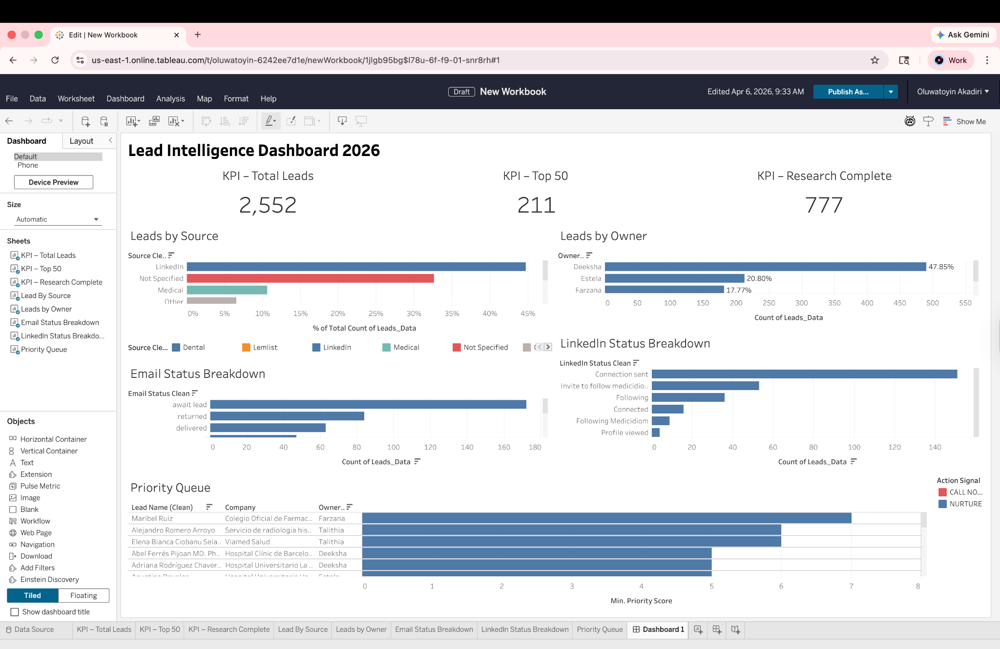
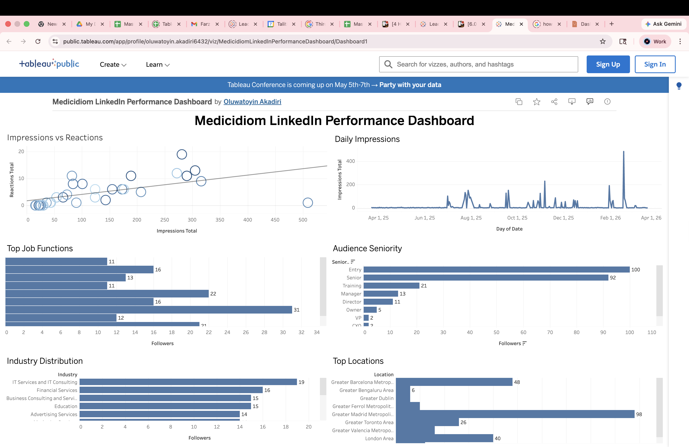

Decision-focused KPI views, filters, and stakeholder-ready summaries.
Hello, I am
Oluwatoyin Akadiri.
Data Analyst, Business Intelligence Analyst, Healthcare Analytics Professional, and Data Storyteller.
Graduate data analyst with hands-on experience in healthcare analytics, business intelligence, lead scoring, market intelligence, and predictive modeling. I build practical systems that make data easier to understand, prioritize, and act on.
Tableau executive dashboards
SQL + Python analysis pipelines
Healthcare growth intelligence
Available forData & BI roles
2,500+healthcare leads analyzed
Structured data cleaning, scoring logic, and repeatable reporting workflows.
Insights translated into outreach, positioning, and operational next steps.
About
Analytics with business context.
I am an M.S. Big Data Analytics candidate with an MBA and practical experience connecting data analysis to business outcomes. During my internship at Medicidiom, I worked across the analytics lifecycle: cleaning data, developing KPI frameworks, building interactive dashboards, conducting competitor research, prioritizing leads, and presenting insights to decision-makers.
My strongest work sits at the intersection of healthcare analytics, business intelligence, growth analytics, and data storytelling. I am especially interested in roles where I can improve reporting quality, operational visibility, and evidence-based decision-making.
Healthcare AnalyticsBusiness IntelligenceData VisualizationGrowth Analytics
Selected work
Projects built for insight and action.
Showing all 10 projects.

TableauHealthcare analyticsFeatured
Lead Intelligence & Scoring Dashboard
Built an end-to-end Tableau dashboard for 2,500+ healthcare leads, combining KPI scorecards, source and owner analysis, engagement status, drill-down filters, and a Top-50 prioritization model.
- Improved visibility into lead quality and outreach readiness
- Enabled sales teams to focus on high-value prospects
- Connected dashboard insights to operational outreach decisions
Tableau · Data Cleaning · KPI Design · Lead Scoring
View Tableau dashboard
PythonHealthcare EDAZerve
Understanding Factors That Influence Missed Medical Appointments
Analyzed more than 110,000 patient appointment records to identify attendance patterns and the factors associated with missed visits.
- Cleaned and explored a large healthcare dataset to establish reliable attendance trends
- Compared no-show behavior across age, scholarship status, SMS reminders, and appointment weekdays
- Translated the findings into practical recommendations for reducing no-shows and improving appointment management
Python · Pandas · Matplotlib · Exploratory Data Analysis · Healthcare Analytics
View project on Zerve
Market intelligenceStrategy
Competitor Pricing & Data Intelligence
Analyzed 14 medical-language competitors across pricing, delivery models, AI capability, geography, certification, and B2B positioning, with focused assessments of three priority competitors.
- Benchmarked four pricing models across a €0–€500+ annual market range
- Identified gaps in AI adoption, mobile-first delivery, and combined B2C/B2B offerings
- Translated findings into launch positioning, accreditation, and EU expansion recommendations
Competitive Analysis · Pricing Strategy · Excel · Python · Market Intelligence
View professional case study

TableauPythonLead prioritization
Top 50 Lead Prioritization & Outreach Optimization
Developed a transparent lead-scoring framework that converted 2,500+ prospect records into a focused Top 50 action queue, using contact completeness, engagement signals, and outreach readiness to support consistent sales prioritization.
- Ranked high-potential leads through repeatable scoring rules instead of subjective selection
- Segmented next-best actions into Call Now, Find Phone Number, Find LinkedIn, and Find Email
- Delivered an interactive dashboard for reviewing scores, readiness, locations, and outreach requirements
Tableau · Python · Lead Scoring · Segmentation · Sales Operations
View Tableau dashboard

TableauAudience analytics
LinkedIn Performance & Audience Dashboard
Built an interactive dashboard to evaluate daily impressions, reactions, audience seniority, job functions, industries, and geographic distribution.
- Measured the relationship between impressions and reactions
- Identified audience concentration by seniority and location
- Supported content and engagement strategy
Tableau · Time Series · Audience Segmentation · Data Storytelling
View Tableau dashboard
AWSHealthcare cloud3D architecture
MyClinic Secure Healthcare Cloud Architecture
Designed a secure, serverless AWS architecture for a healthcare patient portal, focusing on protected records access, appointment workflows, identity control, encryption, and globally distributed delivery.
- Modeled traffic from Route 53 and CloudFront into S3, API Gateway, Lambda, and DynamoDB
- Added healthcare-grade safeguards with Cognito, KMS encryption, ACM certificates, WAF controls, and least-privilege access
- Structured the solution around scalability, resilience, low operational overhead, and patient-data protection
AWS · Serverless Architecture · IAM · Cognito · API Gateway · Lambda · DynamoDB · KMS · WAF
View cloud architecture page
ExcelGoogle Sheets
Interactive Data Tracking Workbook
Created a polished reporting workbook with KPI scorecards, chart-based summaries, detailed lead views, and clickable navigation to websites and external lead resources.
- Designed for practical daily use by non-technical users
- Improved access to detailed lead information
- Prepared the layout for Excel and Google Sheets workflows
Excel · Google Sheets · KPI Reporting · Hyperlink Workflows
Machine learningAcademic
Student Admission Prediction
Developed an end-to-end logistic regression pipeline covering ingestion, cleaning, feature preparation, train-test splitting, model training, and evaluation.
- Evaluated performance with accuracy, ROC-AUC, confusion matrix, and classification report
- Created heatmap and ROC visualizations
- Documented a reproducible analytical workflow
Python · Pandas · Scikit-learn · Logistic Regression
Machine learningHealthcare
Heart Disease Prediction with KNN
Built and evaluated a K-Nearest Neighbors classifier on a clinical dataset, using model diagnostics to assess limitations and identify opportunities for improvement.
- Reported accuracy, precision, recall, and F1-score
- Used confusion-matrix analysis to diagnose errors
- Communicated findings with ROC and heatmap visuals
Python · NumPy · KNN · Model Evaluation
Data operationsReporting
Healthcare Data Pipeline & KPI Reporting
Used SQL queries and Python scripts to combine fragmented CSV and claims-style datasets, reduce duplicates, and prepare clean records for analysis and stakeholder reporting.
- Reduced manual processing time by 40%
- Created weekly KPI scorecards in Excel
- Presented monthly BI findings using Tableau and actionable notes
SQL · Python · Excel · Tableau · Reporting Automation
Experience
From analysis to operational impact.
2026 – Present
Data Analytics & Insights Intern
Medicidiom · RemoteDelivered healthcare lead intelligence, competitor pricing analysis, Tableau dashboards, data-cleaning workflows, KPI reporting, lead scoring, and audience-performance analysis. Worked with 2,500+ lead records and translated findings into practical growth and outreach recommendations.
TableauSQLPythonHealthcare BI
2023 – 2024
Junior Business Developer
SUNEV Plast · CyprusQualified 80+ prospects weekly, used CRM filters and market segmentation to grow the pipeline, developed targeted HubSpot sequences, prepared pricing intelligence for sales, and mapped customer journeys to identify churn and retention opportunities.
CRM AnalyticsMarket ResearchHubSpotExcel
2019 – 2024
Senior Liaison Officer
Maducare NGO · CyprusImproved program coordination through reporting templates, stakeholder mapping, referral procedures, multi-agency logistics, and standardized communication across five program areas.
Stakeholder ManagementReportingProcess ImprovementCoordination
Skills
Tools and capabilities.
A practical stack for analysis, modeling, visualization, and stakeholder communication.
Analytics & BI
Tableau, Power BI, Excel, Google Sheets, KPI Development, Dashboard Design, Data Storytelling
Data & Programming
SQL, Python, Pandas, NumPy, Scikit-learn, Data Cleaning, Data Transformation, Data Modeling
Methods
Exploratory Analysis, Predictive Modeling, Segmentation, Lead Scoring, Competitive Analysis, Statistical Analysis
Business
Healthcare Analytics, Growth Analytics, CRM Analytics, Stakeholder Communication, Workflow Optimization, Project Management
Education
Academic foundation.
M.S. Big Data Analytics
Bay Atlantic University · Washington, DC
Master of Business Administration
Bahçeşehir University · Cyprus
B.Sc. Political Science
Adekunle Ajasin University · Nigeria